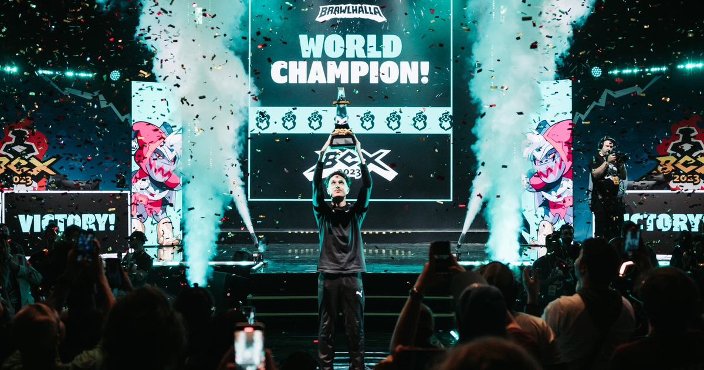

Evolução da comunidade
A comunidade de Brawlhalla no Brasil surgiu apenas em 2017, quando o jogo foi lançado oficialmente, antes disso, não tinham servidores para a América do Sul. O percursor da comunidade e do competitivo foi o Fiend, que passou produzir conteúdo e a participar do campeonato mundial, chamado BCX, em 2017. Com boas colocações nos campeonatos, instigou a comunidade, fazendo ela crescer e surgir jogadores como o Vecinaa, Wess e Stardeath, que faria páreo com o Fiend. Com a pandemia, os campeonatos presenciais cessaram, no entanto, os campeonatos online por regiões surgiram, assim trazendo espectadores para o jogo e rivalidades dentro do próprio Brasil, como Wess e Fiend, e isso estimulou o crescimento da comunidade brasileira ainda mais.
Com a volta dos torneios presenciais, em 2022, eles uniram forças na categoria 2v2 para bater algumas das melhores duplas do mundo, conseguindo uma segunda colocação histórica para o Brasil. Enquanto isso, novos jogadores surgiram inspirados nesses bons resultados, o Kyna, V3m_t4nquilo, Lores e o Yuz. Em 2022, o mundial trouxe boas colocações, tanto no 1v1, quanto no 2v2, o Brawlhalla já era bem conhecido no Brasil e já tinha sua comunidade bem formada. Em 2023, várias competições foram feitas antes da BCX, onde o brasileiro Yuz mostrou para o restante do mundo o potencial da América do Sul, vencedo torneios de expressão em cima dos maiores jogadores das outras regiões. Com isso, veio a BCX, onde os brasileiros se destacaram e trouxeram o título 1v1, conquistado pelo brasileiro Yuz, e a segunda colocação, que também foi de um brasileiro, chamado Kyna.
Com a consolidação da comunidade e do competitivo sul-americano, o ano de 2024 foi repleto de vitórias em todos os campeonatos, tragas por Kyna. O ano de 2024 parecia uma reprise de 2023, já que a final do campeonato mundial foi, novamente Kyna e Yuz, assim trazendo o título mundial 1v1 para o Brasil novamente. No entanto, diferentemente de 2023, o título 2v2 também seria do Brasil, sendo conquistado pela dupla Kyna e Lores. Toda essa história está por trás da formação da comunidade de Brawlhalla no Brasil.